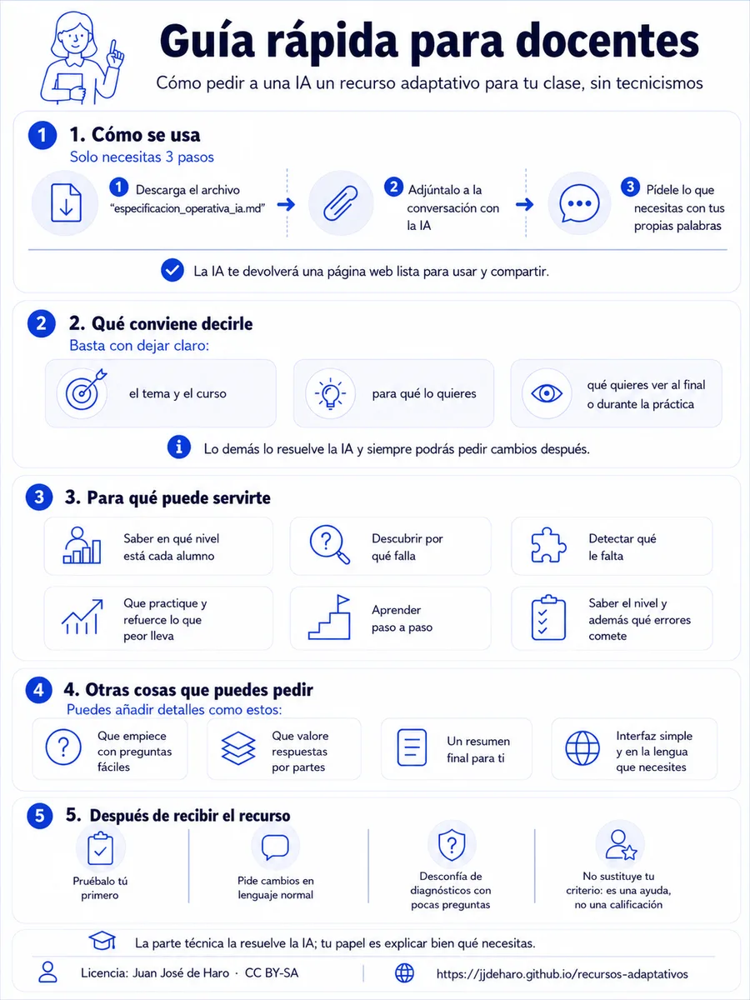

Cómo pedir a una IA un recurso adaptativo para tu clase, sin tecnicismos
Versión 1.1
Esta guía te explica cómo pedir a una IA (ChatGPT, Claude, Gemini…) que cree un recurso educativo adaptativo para tu clase, sin necesidad de conocer la metodología que hay detrás. De la parte técnica se encarga la IA siguiendo el archivo especificacion_operativa_ia.md.

Con esos tres pasos ya puedes empezar. No hace falta que sigas leyendo. Si explicas lo que necesitas, la IA debe poder crear el programa y preguntarte solo por los datos imprescindibles que falten.
Lo que viene a continuación no es un procedimiento que tengas que seguir paso a paso. Es una guía para ayudarte a pensar qué puedes pedir, qué opciones tienes y cómo expresar mejor tu idea si quieres afinar el recurso.
La IA te devolverá una página web que funciona sola: puedes abrirla en cualquier navegador y compartirla con tu alumnado.
No hay fórmulas que rellenar. Basta con que tu petición deje claro, con tus palabras:
Todo lo demás (número de preguntas, cuándo termina, cómo se calcula el resultado…) lo resuelve la IA con valores razonables, y siempre puedes pedirle cambios después.
Lo que más condiciona el recurso es para qué lo quieres. Estas son las finalidades habituales, con lo que la IA te dará en cada caso. No tienes que nombrar ni pedir un tipo de recurso concreto: descríbele tu objetivo con tus palabras y la IA elige el formato adecuado. Cada finalidad lleva además un ejemplo de petición real, solo orientativo: no lo copies tal cual, escribe la tuya con tu contexto.
| Si quieres... | El recurso que te dará la IA |
|---|---|
| Saber el nivel del alumno | una prueba que se adapta y estima su nivel |
| Averiguar por qué falla | una prueba que distingue entre las posibles explicaciones del error |
| Detectar varios fallos posibles | una prueba que revisa por separado cada fallo posible |
| Practicar lo que peor lleva | un entrenador que insiste en lo que menos domina |
| Aprender por etapas | un itinerario que avanza cuando domina cada etapa |
| Saber nivel y errores | una prueba que da el nivel y además los fallos concretos |
Una prueba corta que se adapta según las respuestas del alumno y termina diciéndote su nivel. Útil al empezar un tema, al acabarlo o para formar grupos.
Un docente de 5.º de primaria podría pedir, por ejemplo:
Lee el documento adjunto e implementa el recurso siguiendo las reglas operativas aplicables al tipo de recurso solicitado. Quiero una prueba corta para saber en qué nivel están mis alumnos de 5.º de primaria en fracciones equivalentes, antes de empezar la unidad. Al terminar, el alumno y yo debemos ver su nivel, cómo de fiable es el resultado y qué le conviene hacer a continuación.
Cuando un alumno falla y sospechas que hay una razón concreta detrás (una idea equivocada, un método mal aprendido), la prueba puede diseñarse para distinguir cuál de las explicaciones posibles es la verdadera.
Por ejemplo, en lengua de 2.º de ESO:
Lee el documento adjunto e implementa el recurso siguiendo las reglas operativas aplicables al tipo de recurso solicitado. Mis alumnos de 2.º de ESO fallan al identificar el sujeto de una oración y quiero averiguar por qué falla cada uno. Solo una de estas explicaciones puede ser cierta en cada alumno: o cree que el sujeto es siempre lo primero que aparece en la oración, o lo identifica por el significado (de quién o de qué se habla) sin comprobar la concordancia con el verbo, o en realidad lo hace bien. Al terminar quiero saber cuál es la explicación más probable para ese alumno y qué debería explicarle yo en cada caso.
Cuando los fallos posibles pueden darse a la vez (un alumno puede tener uno, varios o ninguno), la prueba revisa cada fallo por separado y te dice cuáles tiene.
Por ejemplo, con las operaciones con decimales en 6.º de primaria:
Lee el documento adjunto e implementa el recurso siguiendo las reglas operativas aplicables al tipo de recurso solicitado. Quiero una prueba para 6.º de primaria que detecte qué fallos arrastra cada alumno al operar con decimales. Puede tener varios a la vez: equivocarse al restar con llevadas, no alinear bien la coma, o colocar mal el cero en el cociente. Al terminar quiero ver, para cada fallo, si lo tiene, si no lo tiene o si no ha quedado claro, y qué conviene reforzar.
Un entrenador de ejercicios que se adapta solo: detecta qué tipos de ejercicio domina menos el alumno y le propone más de esos. No tiene final: el alumno practica el tiempo que quiera.
Por ejemplo, para repasar fracciones en 1.º de ESO:
Lee el documento adjunto e implementa el recurso siguiendo las reglas operativas aplicables al tipo de recurso solicitado. Quiero un programa de práctica de operaciones con fracciones para 1.º de ESO (suma, resta, multiplicación y división) que proponga más ejercicios de lo que peor lleve cada alumno. Después de cada respuesta debe decir si está bien o mal y explicar el error, con la posibilidad de pedir una pista. Quiero que el alumno vea en pantalla cómo va en cada tipo de operación.
Un itinerario guiado que enseña algo por etapas. El alumno no pasa a la siguiente hasta demostrar que domina la actual; si se atasca, recibe ayuda y puede reintentarlo.
Por ejemplo, para introducir las ecuaciones:
Lee el documento adjunto e implementa el recurso siguiendo las reglas operativas aplicables al tipo de recurso solicitado. Quiero un itinerario para que mis alumnos de 1.º de ESO aprendan a despejar la x paso a paso: primero ecuaciones como x + 3 = 7, luego como 2x = 10 y por último combinadas como 2x + 3 = 11. Que no pasen de etapa hasta dominarla, y que reciban pistas y explicaciones si se atascan. Al final quiero ver qué etapas ha superado cada uno y dónde ha necesitado ayuda.
Las dos cosas en una sola prueba: el nivel general del alumno y sus fallos concretos.
Por ejemplo, con la acentuación:
Lee el documento adjunto e implementa el recurso siguiendo las reglas operativas aplicables al tipo de recurso solicitado. Quiero una prueba de acentuación para 3.º de ESO que me diga el nivel de cada alumno y, además, qué fallos concretos tiene: puede confundir las reglas de agudas y llanas, ignorar los hiatos, o fallar solo en la tilde diacrítica, y puede tener varios de estos fallos a la vez. Al terminar quiero su nivel, el estado de cada fallo y una recomendación: qué practicar y qué habría que explicarle.
Si tu recurso detecta errores, hay un matiz que conviene que quede reflejado: si en cada alumno solo una explicación puede ser cierta (compiten entre sí) o si puede tener varios fallos a la vez (se acumulan).
No necesitas ningún término técnico ni una aclaración especial: normalmente la IA lo deduce de cómo cuentas el problema. Basta con describir los errores con naturalidad, como en los ejemplos anteriores («solo una de estas explicaciones puede ser cierta» frente a «puede tener varios a la vez»).
Un ejemplo cotidiano: «la planta se ha puesto mustia porque la riegas de menos o porque la riegas de más» son explicaciones que compiten (solo una puede ser la causa: no se puede regar de menos y de más a la vez). En cambio, «está mustia porque le falta luz y además le falta abono» pueden ser verdad las dos a la vez. Si dudas de que la IA lo haya entendido bien, díselo de forma explícita o compruébalo al probar el recurso.
Añade a tu petición, con tus palabras, lo que te importe. Algunas ideas:
Esta guía forma parte del Protocolo para sistemas educativos adaptativos bayesianos. Si quieres entender cómo funciona por dentro, ahí está toda la explicación.
Cómo citar (APA 7): de Haro, J. J. (2026). Guía rápida para docentes — Protocolo para sistemas educativos adaptativos bayesianos (versión 1.1). https://jjdeharo.github.io/recursos-adaptativos/